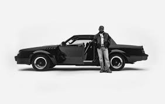

GNX Review
wacced out murals - nice sounds, nice theme
squabble up - fucking dance bop like its 1999 great reflection on african american society and the self hated between both male / female blacks
luther (with sza) - makes me feel like i figured life out. the chorus "better days coming for sure" really helped me to cry after losing everything in life and hitting my definition of rock bottom. etc
man at the garden - intensely motivating. gave me strength, a fire to keep going. to keep pushing. keep fighting. to keep trying amidst my pain. amidst my wondering. to keep going because we all have our issues, we all have our demons. we all fight our inner battle. but i'm going to come back "i deserve it all" I will win. i deserve more than it all. i deserve IT ALL
i need to put a smile on my momma, on us all
tell me why you deserve the greatest of all time motherfucker
tell me why you deserve me
hey now - feat.Dody6 : some type of realization that i'm an extreme late bloomer. i need to embrace who i am. the potential
THE DODY6 VERSE THOUGH bitches acting like some niggas niggass acting like some hoes
reincarnated - makes me realize that i will reincarnate. first verse is amazing man last verse makes a guy with no dad want to cry.
this helped me not take my gifts for granted. dad. you know that i could be great if i don't follow in your steps. if i stay constant, stay happy, life, i can change and reincarnate and be a better man.
tv off ft lefty gunplay - i make these niggas mad HAHA ME dont put your life in these weird niggas hand lol me to my ex. i'm not weird i'm fucking perfect. trust the process. you dont but i do. im going to be ontop and win. im going to look back at you all and fucking feel like i won.
MUSTAAAAAAAAAAAAAAAAAAAAAAAAAAAAARD NIGGAS ACTING BAD CAUSE SOMEBODY GOTTA DO IT TURN THIS TV OFF x5 MUSTAAAAAAAAAAAAAAAAAAAAAAAAAAAAAAAAAARD
dodger blue- am i tripping yes i am. real. dont take it personal. thats what sandra is probably thinking.
peekaboo (feat. azchike) - aint the one to play with (me) the type of shit im on you wouldnt understand broke bitch business i cannot be your man WHAT THEY TALKIN BOUT THEY TALKIN BOUT NOTHING
heart pt. 6 - FREE YOUR THOUGHTS AND WATCH THEM FLY USE YOUR HEART AND NOT YOUR EYES
THE HEROS JOURNEY I FOLLOW THE HEROS JOURNEY
you saw me and tried, but I have to transform? I cant do this with anyone but myself
gnx - IM TRIPPING AND IM LOVING IT LIKE WAAAAAAAAAAAAAAAAAAAAAAAAAAA nice talk on how life changes you over time. people keep changing and reach catalysts and keep going
gloria (with sza) - said you gone see other people
watch me
all of you
watch me from the shadows
GNX final thoughts:
I SEE YOU, YOU SEE ME
9/10 album imo. biased. of course. who cares.
but really though. this is it for me. fucking honing my craft and enjoying life. gnx put me into euphoria. i found why i keep going in programming as dramatic as it sounds. this is amazing!
why i keep going.
keep shooting for your stars, theyre closer to you than we think